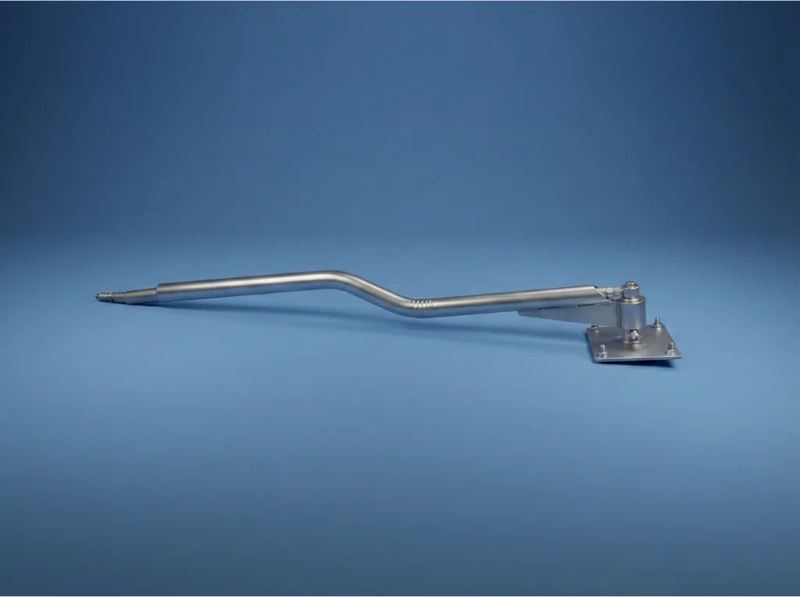
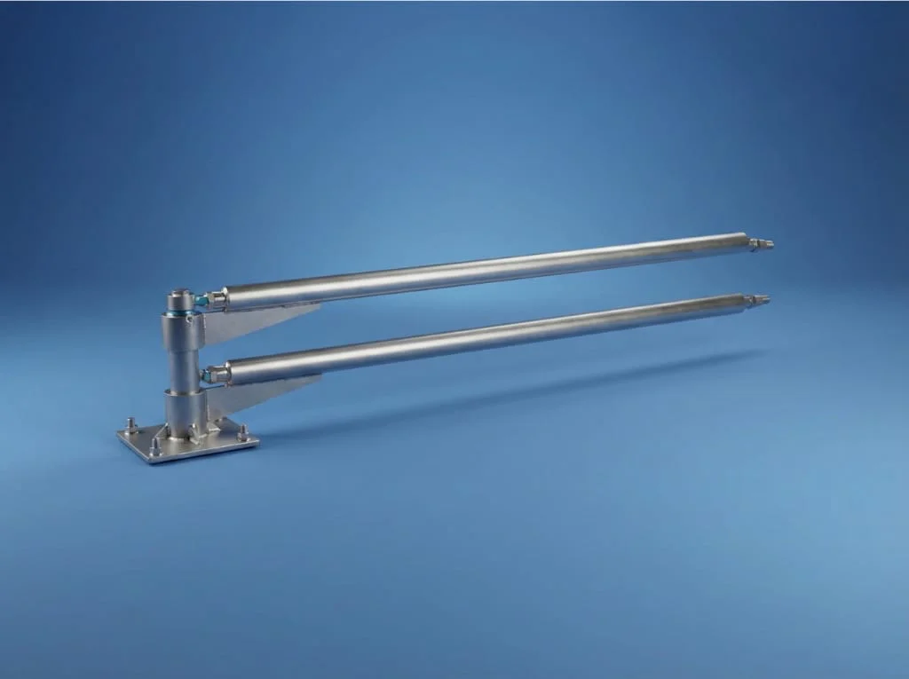
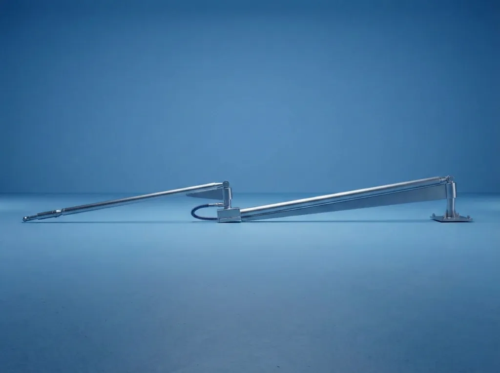

Kısa tanım
Oto yıkama pervanesi, boom pervane ve boom pergel aynı ürün ailesini anlatır. Sistem; kol, tavan bağlantısı, döner rekor ve hortum taşıma yapısından oluşur. Amaç hortumun yere sürtmesini, dolanmasını ve araca temas etmesini azaltmaktır.
Self servis oto yıkama istasyonları için boom tekli, boom çiftli, tır yıkama pervanesi ve döner rekor çözümleri.
Boom pervane, oto yıkama istasyonlarında hortumu tavandan taşıyan ve operatörün aracın etrafında rahat hareket etmesini sağlayan 360 derece dönebilen pergel sistemidir.
Oto yıkama pervanesi, boom pervane ve boom pergel aynı ürün ailesini anlatır. Sistem; kol, tavan bağlantısı, döner rekor ve hortum taşıma yapısından oluşur. Amaç hortumun yere sürtmesini, dolanmasını ve araca temas etmesini azaltmaktır.
Tek hortumlu kabinler ve standart binek araç yıkama alanları için uygundur. Basit kurulum ve ekonomik işletme hedeflenir.
Köpük ve su hattını aynı kabinde kullanan yoğun self servis istasyonları için uygundur. İki hattı düzenli taşır.
Tır, kamyon ve otobüs gibi yüksek araçlarda daha geniş erişim ve ağır kullanım dayanımı için tasarlanır.
Basınç hattının dönmesini sağlayan kritik parçadır. Sızdırmazlık, bakım sıklığı ve kullanım ömrü üzerinde doğrudan etkilidir.
İstasyon yapısına göre doğru modeli seçin veya hızlı teknik teklif için Beta Makine ile iletişime geçin.

Tek hortumlu self servis oto yıkama kabinleri için krom Z kol yapılı, 360 derece dönebilen boom pervane.
Tekli Modeli İncele
Jet köpük ve normal yıkama hattını birlikte taşıyan, yoğun istasyonlar için geliştirilen çiftli boom pervane.
Çiftli Modeli İncele
Ağır vasıta yıkama alanlarında yüksek erişim ve kontrollü hortum yönetimi sağlayan teleskopik boom çözümü.
Tır Modelini İnceleEvet. Sektörde oto yıkama pervanesi, boom pervane, boom pergel ve hortum askı sistemi ifadeleri çoğu zaman aynı ürün ailesi için kullanılır.
Tek hortumlu kabinlerde boom tekli Z, köpük ve su hattı birlikte kullanılacak kabinlerde boom çiftli, ağır vasıta hatlarında tır yıkama pervanesi incelenmelidir.
Kabin sayısı, araç tipi, tekli/çiftli hat ihtiyacı, montaj alanı ve istenen yedek parça bilgisi teklifin daha hızlı netleşmesini sağlar.
Boom pervane modeli ve fiyatı için hızlı teknik görüşme yapın.
Teklif Alın